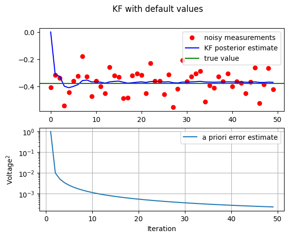
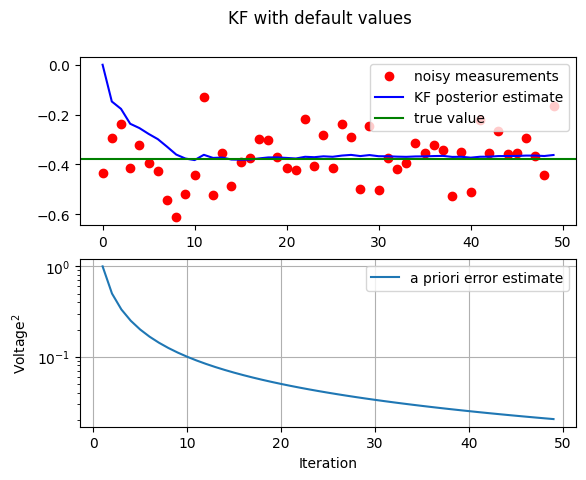
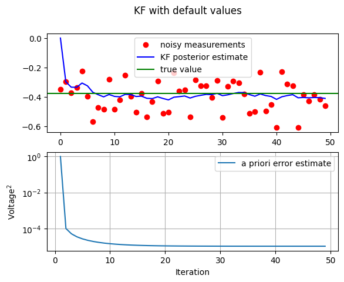

import numpy as np
import matplotlib.pyplot as plt
np.random.seed(1955)
#plt.rcParams['figure.figsize'] = (10, 6)
def KF_ct(n_iter=50, sig_w=0.001, sig_v=0.1):
# intial parameters
n_iter = 50
sz = (n_iter,) # size of array
x = -0.37727 # truth value
z = np.random.normal(x,0.1,size=sz) # observations (normal about x, sigma=0.1)
Q = sig_w**2 # 1e-6 # process variance
# allocate space for arrays
xhat = np.zeros(sz) # a posteri estimate of x
P = np.zeros(sz) # a posteri error estimate
xhatminus = np.zeros(sz) # a priori estimate of x
Pminus = np.zeros(sz) # a priori error estimate
K = np.zeros(sz) # gain or blending factor
R = sig_v**2 # 0.1**2 # estimate of measurement variance, change to see effect
# intial guesses
xhat[0] = 0.0
P[0] = 1.0
for k in range(1,n_iter):
# time update
xhatminus[k] = xhat[k-1]
Pminus[k] = P[k-1] + Q
# measurement update
K[k] = Pminus[k]/( Pminus[k] + R )
xhat[k] = xhatminus[k]+K[k]*(z[k]-xhatminus[k])
P[k] = (1 - K[k])*Pminus[k]
fig, (ax1, ax2) = plt.subplots(2,1)
fig.suptitle('KF with default values')
ax1.plot(z,'ro',label='noisy measurements')
ax1.plot(xhat,'b-',label='KF posterior estimate')
ax1.axhline(x,color='g',label='true value')
ax1.legend()
valid_iter = range(1,n_iter) # Pminus not valid at step 0
ax2.semilogy(valid_iter,Pminus[valid_iter],label='a priori error estimate')
ax2.grid()
ax2.legend()
ax2.set(xlabel='Iteration', ylabel='Voltage$^2$') #, ylim=[0,.01])4 Example 1 - estimating a constant
In this simple numerical example let us attempt to estimate a scalar random constant, a voltage for example. Let us assume that we can obtain measurements of the constant, but that the measurements are corrupted by a 0.1 volt RMS white measurement noise (e.g. our analog-to-digital converter is not very accurate).
Here, we will use data assimilation notation, where - f denotes forecast (or prediction) - a denotes analysis (or correction) - t denotes the true value.
In this scalar, 1D example, our process is governed by the state equation,
\[\begin{align*} x_{k} & = F x_{k-1}+w_{k}=x_{k-1}+w_{k} \end{align*}\]
and the measurement equation, \[\begin{align*} y_{k} & = H x_{k}+v_{k} = x^{\mathrm{t}} + v_{k}. \end{align*}\] The state, being constant, does not change from step to step, so \(F=I.\) Our noisy measurement is of the state directly so \(H=1.\)
The time-update (forecast) equations are, \[\begin{align} x_{k+1}^{\mathrm{f}} & = x_{k}^{\mathrm{a}}\,,\\ P_{k+1}^{\mathrm{f}} & = P_{k}^{\mathrm{a}}+Q \end{align}\] and the measurement update (analysis) equations are \[\begin{align} K_{k+1} & = P_{k+1}^{\mathrm{f}}(P_{k+1}^{\mathrm{f}}+R)^{-1},\\ x_{k+1}^{\mathrm{a}} & = x_{k+1}^{\mathrm{f}}+K_{k+1}(y_{k+1}-x_{k+1}^{\mathrm{f}}),\\ P_{k+1}^{\mathrm{a}} & = (1-K_{k+1})P_{k+1}^{\mathrm{f}}. \end{align}\]
:::{admonition} Initialization :class: tip Presuming a very small process variance, we let \(Q=1.\mathrm{e}-5\). We could certainly let \(Q=0\) but assuming a small but non-zero value gives us more flexibility in tuning the filter as we will demonstrate below. Let us assume from experience that we know the true value of the random constant has a standard Gaussian probability distribution, so we will seed our filter with the guess that the constant is \(0.\) In other words, before starting we let \(x_{0}=0.\) Similarly we need to choose an initial value for \(P_{k}^{\mathrm{a}}\), call it \(P_{0}.\) If we were absolutely certain that our initial state estimate was correct, we would let \(P_{0}=0.\) However, given the uncertainty in our initial estimate \(x_{0},\) choosing \(P_{0}=0\) would cause the filter to initially and always believe that \(x_{k}^{\mathrm{a}}=0.\) As it turns out, the alternative choice is not critical. We could choose almost any \(P_{0}\neq0\) and the filter would eventually converge. We will start our filter with \(P_{0}=1.\) :::
:::{admonition} Simulations To begin with, we randomly chose a scalar constant \(y=-0.37727.\) We then simulate \(100\) distinct measurements that have an error normally-distributed around zero with a standard deviation of \(0.1\) (remember we supposed that the measurements are corrupted by a \(0.1\) volt RMS white measurement noise). :::
# use all default values
KF_ct()
In this first simulation we fixed the measurement variance at \(R=(0.1)^{2}=0.01.\) Because this is the “true” measurementerror variance, we would expect the “best” performance in terms of balancing responsiveness and estimate variance. This will become more evident in the second and third simulations.
The above figure depicts the results of this first simulation. The true value of the random constant \(x=-0.37727\) is given by the solid line, the noisy measurements by the dots and the filter estimate by the blue curve.
Now, we will see what happens when the measurement error variance \(R\) is increased or decreased by a factor of \(100\) respectively.
- first, the filter was told that the measurement variance was \(100\) times greater (i.e. \(R=1\)) so it was “slower” to believe the measurements.
- then, the filter was told that the measurement variance was \(100\) times smaller (i.e. \(R=0.0001\) ) so it was very “quick” to believe the noisy measurements.
# increase R = 1
KF_ct(sig_v=1)
# decrease R = 0.0001
KF_ct(sig_v=0.01)
:::{admonition} Conclusion :class: danger
While the estimation of a constant is relatively straightforward, this example clearly demonstrates the workings of the Kalman filter. In the second Figure (R=1) in particular, the Kalman filtering is evident as the estimate appears considerably smoother than the noisy measurements. We observe the speed of convergence of the variance in the bottom subplot of the respective Figures. :::